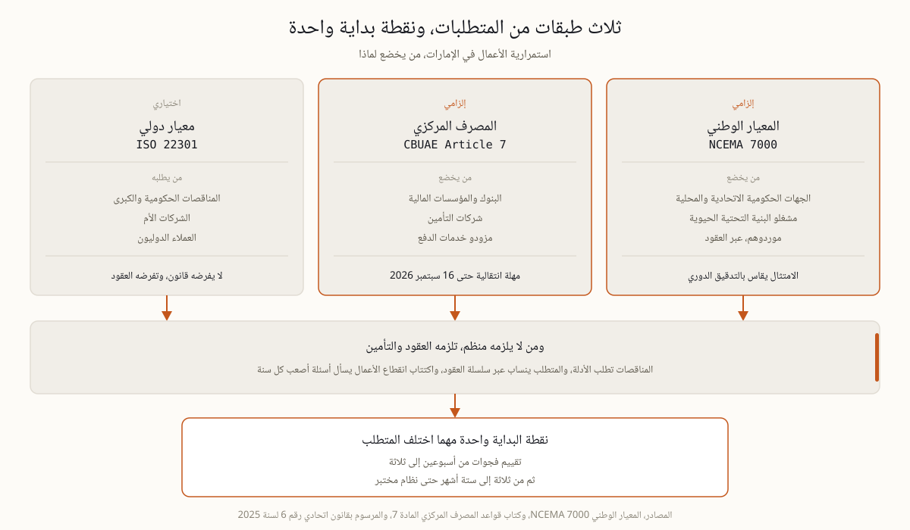

أكثر الأخطاء كلفة في هذا الملف هو افتراض أن الجميع يخضع للمتطلب نفسه، ثم بناء مشروع أكبر أو أصغر مما تحتاجونه فعلا. الطبقة الأولى وطنية، فالمعيار NCEMA 7000 إلزامي للجهات الحكومية وللبنية التحتية الحيوية، وبنيته ومتطلباته في صفحته المستقلة. والطبقة الثانية مصرفية، فالمادة 7 من كتاب قواعد المصرف المركزي تلزم البنوك والمؤسسات المالية، ثم جاء المرسوم بقانون اتحادي رقم 6 لسنة 2025 فأدخل شركات التأمين ومزودي خدمات الدفع في إطار رقابي واحد بمهلة انتقالية تنتهي في 16 سبتمبر 2026، والتفصيل في صفحة المصرف المركزي وتوزيع الوقت المتبقي في صفحة العد التنازلي. والطبقة الثالثة دولية واختيارية، فمعيار ISO 22301 لا يفرضه قانون إماراتي، لكن المناقصات والشركات الأم والعملاء الدوليين يطلبونه، ومسار تطبيقه في صفحة التطبيق. ومن يريد أولا معنى استمرارية الأعمال كانضباط إداري يجد الأساس في صفحة التعريف.
اقرؤوا الخمسة بالترتيب وتوقفوا عند أول واحد ينطبق عليكم، فهو يحدد سقف متطلباتكم ومصدر أسئلة أي فاحص أو مدقق يزوركم.

أربعة ضغوط تحرك هذا الملف في الإمارات اليوم، وثلاثة منها لا علاقة لها بالمنظمين. الأول تنظيمي كما سبق. والثاني عملاؤكم، فالجهات الحكومية والشركات الكبرى تطلب أدلة استمرارية من مورديها، والمتطلب ينزل عبر سلسلة العقود حتى يصل إلى مقاول من الباطن لم يسمع باسم أي معيار. والثالث شركات التأمين، فاكتتاب تأمين انقطاع الأعمال صار يسأل أسئلة أصعب كل سنة، ووجود نظام مختبر يؤثر في قابلية التأمين وفي سرعة تسوية المطالبة معا، لأن التأمين ينقل الأثر المالي بينما الاستمرارية تقصر مدة الانقطاع نفسها، وهما يعملان معا ولا يغني أحدهما عن الآخر. والرابع صورة التهديدات، فبرمجيات الفدية وحوادث المجال الجوي الإقليمية حولت سيناريوهات كانت توصف بالاحتمال المنخفض إلى ظروف تشغيل متكررة، وقد لاحظت مجالس الإدارة ذلك وبدأت تسأل عنه. ولذلك يقاس الامتثال هنا بقدرة مثبتة لا بملف وثائق.
النظام الذي يصمد يتكون من خمسة أجزاء، ولكل جزء اختبار بسيط يكشف إن كان حقيقيا أم شكليا.
| المكون | ما ينتجه | اختبار الجودة |
|---|---|---|
| تحليل أثر الأعمال | أنشطة حيوية وكلفة يوم توقف وأهداف تعاف | أرقام يوقعها المدير المالي لا صفات |
| تقييم المخاطر | سيناريوهات قادرة على إيقافكم ونقاط فشل منفردة | القائمة تقصر ربعا بعد ربع |
| الاستراتيجيات وخطط الاستمرارية | مواقع بديلة وحلول يدوية وتعاف تقني وصلاحيات الساعات الأولى | قصيرة بما يكفي لاستخدامها في الثانية فجرا |
| التمارين | ملاحظات وتوقيتات وإجراءات مغلقة بتواريخ | اختبار واقعي واحد سنويا على الأقل يجد شيئا |
| المؤشرات والحوكمة | مؤشر مرونة وتقارير مجلس ودورة مراجعة | القيادة تجيب برقم عن سؤال هل نتعافى |
لمؤسسة متوسطة الحجم يمر المسار الموثوق بمحطتين، تقييم فجوات من أسبوعين إلى ثلاثة، ثم من ثلاثة إلى ستة أشهر من التقييم حتى نظام مختبر جاهز للتدقيق. وما يحرك هذه المدة ليس حجم الشركة بقدر ما هو انخراط القيادة وتعقيد التشغيل، فالمشروع الذي يحضره الرئيس التنفيذي مرة كل أسبوعين ينتهي في نصف الوقت. وأنفع ناتج مبكر هو رقم واحد، كلفة اليوم الضائع لكل منشأة أو عملية حيوية، لأنه يسعر كل قرار لاحق من إنفاق الموقع البديل إلى حدود وثيقة التأمين. ومن هنا جاءت القاعدة التي توفر الميزانيات، لا تشتروا أي إجراء استمرارية قبل تحليل الأثر، فبدون كلفة التوقف يكون كل عرض إما غاليا جدا أو رخيصا جدا ولا تملكون ما تميزون به. والانضباط نفسه يتدرج نزولا بصدق للشركات الصغيرة، تحليل أثر واحد مركز وخطة قصيرة لأهم ثلاثة سيناريوهات واختبار سنوي واحد، فالمعايير نفسها تنص على التناسب صراحة، وما لا يتدرج نزولا هو تخطي الاختبار.
هذه الصفحة نقطة دخول لا مرجع نهائي، وكل مسار له صفحته. من يبني نظاما من الصفر يبدأ بالتعريف ثم بتحليل الأثر ثم بأهداف التعافي. ومن يستعد لتدقيق يذهب إلى مسار ISO 22301 أو إلى المعيار الوطني حسب جمهوره، ومن أراد المقارنة بينهما يجدها في صفحة المقارنة. ومن يخضع للمصرف المركزي يبدأ من صفحة المتطلب ثم من العد التنازلي. ومن يبني الطبقة الإدارية فوق ذلك كله يقرأ عن المرونة التشغيلية وعن شهية المخاطر، فهما اللغة التي يناقش بها المجلس هذا الملف. ومن يبحث عن تأهيل شخصي لفريقه يجد الخيارات في صفحة الشهادات وفي صفحة التدريب على المعيار الوطني.
الطبقة التي تربط كل ما سبق بمجلس الإدارة هي حوكمة المرونة، وهي مادة برنامج ERGP، أول شهادة في حوكمة المرونة متاحة بالكامل باللغة العربية وبالإنجليزية أيضا. ست وحدات وستة مخرجات عملية ومشروع ختامي يناقش أمام ممتحن وشهادة قابلة للتحقق.
تعرف على برنامج ERGP